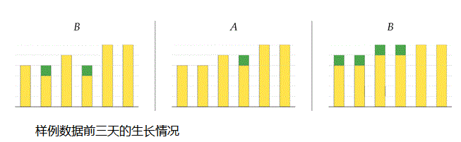

BZPRO
#4432. [Cerc2015]Greenhouse Growth
内存限制：512 MiB
时间限制：10 Sec
提交
提交记录
讨论
题目描述
你从计算机科学转向农业，你的新工作包括在一个地下温室种植向日葵。在温室中有n个排列在一条直线的向日葵植株，从左向右编号为1到n。有A、B2个照射器为向日葵的生长提供光和热，且照射器A、B分别放置在向日葵的左右两端。
每天只有1个照射器被打开，使所有向日葵转向光源，并使部分向日葵生长。向日葵会生长当且仅当其朝向的相邻植株比它更高，其每天的生长高度为1厘米。请注意，一个植株的生长将使其背后的植株立刻开始生长。
样例数据前三天的生长情况

你将被给出向日葵的初始高度和接下来m天的光照计划，请计算所有向日葵最终的高度。
输入格式
第一行有2个整n和m(1<= n, m <=300 000)——植株数和天数。
接下来一行包括n个整数h1, h2,… , hn (1 <= hk <=109)——从左到右向日葵的初始高度。
接下来一行包括一个仅含字母A/B长度为m的字符串——从第一天开始的光照计划。
输出格式
n个整数——从左到右每株向日葵最终的高度
样例
样例输入
6 5
4 3 5 3 6 6
BABAA
样例输出
5 5 6 6 6 6
数据范围与提示